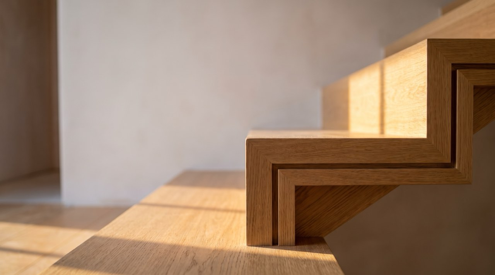
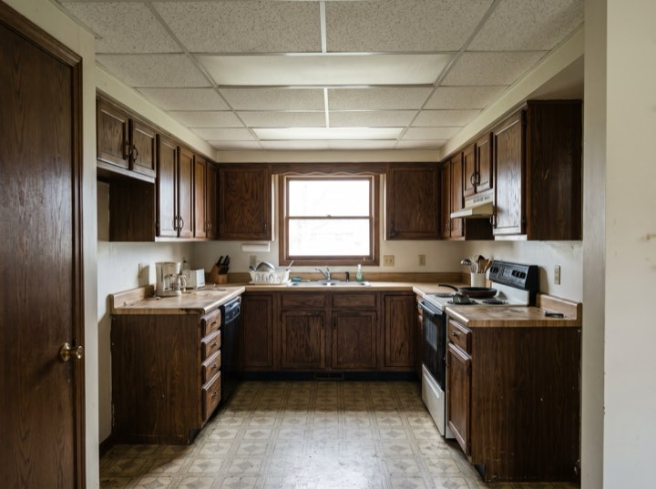
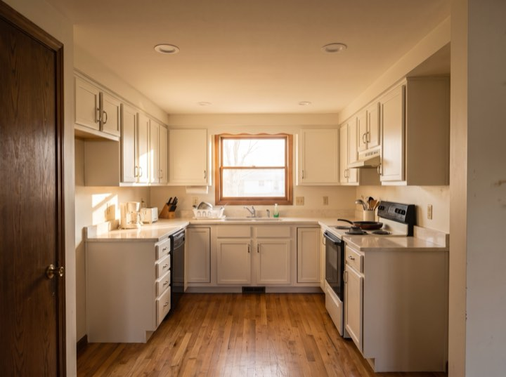
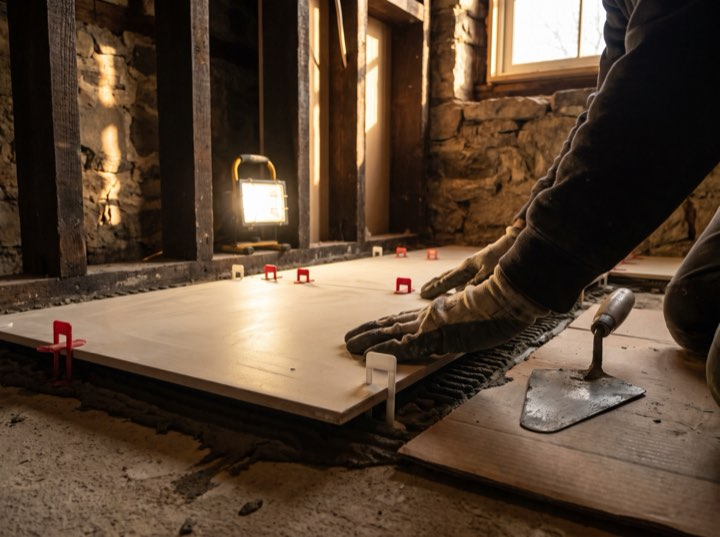
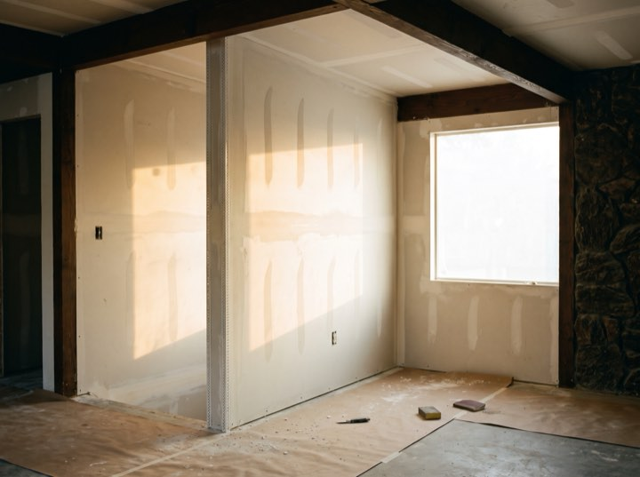
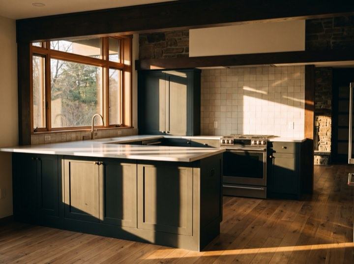

Whole-home renovation
Gut renovations and reconfigurations. Structural, mechanical and finish work under one contract and one project manager.
Whole-home renovation & additions
Whole-home renovations, additions and structural work, typically from $75,000. One line-item proposal with the allowances written where you can see them, because that is where surprise change orders are usually hiding.

Services
We take on fewer projects than we could, because running four properly beats running nine badly.
Gut renovations and reconfigurations. Structural, mechanical and finish work under one contract and one project manager.
Second storeys, rear extensions and garage conversions, including the survey, engineering and permitting.
Usually where a bigger project starts. We'll tell you honestly whether it makes sense to do them alone or as part of something larger.
Load-bearing changes, foundation work and the permit process. This is the part that derails projects run by others.
Process
The price is rarely the anxious part. Not knowing which parts of it are still a guess is the anxious part.
We visit, listen, and tell you whether the idea works and roughly what it costs. Free, and sometimes the answer is don't.
Drawings, engineering where it's needed, and a line-item proposal. Every allowance is named and priced, so you know exactly which numbers can still move.
We handle the city. You get a week-by-week schedule before anyone swings a hammer.
A named project manager, a written update every Friday, and a final walkthrough with a punch list we actually close out.
Itemised
Tile, fixtures, cabinetry and finish carpentry, each against the allowance it was quoted at. No adjectives here either.





That's the right time to call. Our calendar fills six to nine months out, and the design and permit stage takes longer than people expect.
Free consultations. Projects typically start at $75,000.